Верстка как связующее звено
- Дизайнер
- Верстальщик
- Программист
- Пользователь
1. Не забывать про экранные разрешения
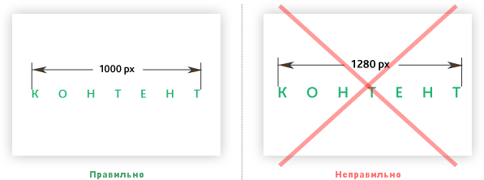
2. Использовать тип наложения слоя «обычный»
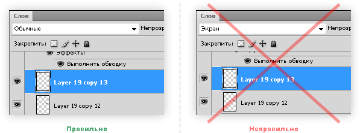
4. Комментировать то, что нарисовал
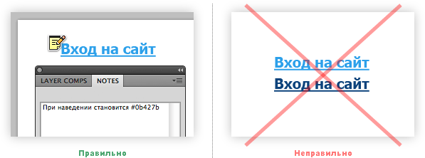
5. Прикреплять к проекту несистемные шрифты
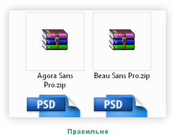
6. Удалять мусор в виде неиспользуемых
папок и слоев
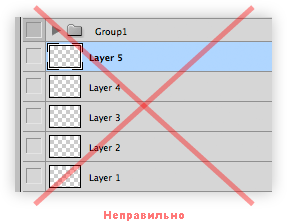
7. Называть файлы по-английски
или транслитом
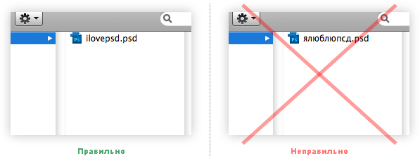
8. Не склеивать слои без необходимости
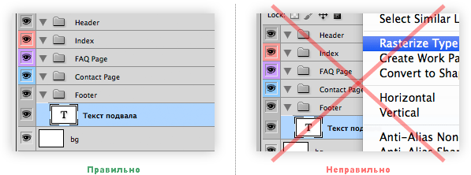
12. Кегль шрифта задавать целым числом
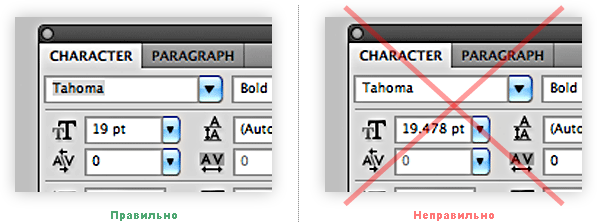
13. Перед отправкой проверять орфографию
14. Для адаптивных дизайнов делать макеты
под несколько разрешений
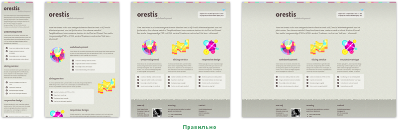
15. Стараться не менять дизайн после начала верстки
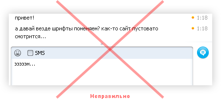
16. Не требовать пиксельного соответствия
макету
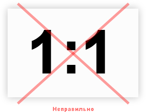
Что дизайнер может дать верстальщику
- Не забывать про экранные разрешения
- Использовать тип наложения слоя «обычный»
- Давать слоям названия
- Комментировать то, что нарисовал
- Прикреплять к проекту несистемные шрифты
- Удалять мусор в виде неиспользуемых папок и слоев
- Называть файлы по-английски или транслитом
Что дизайнер может дать верстальщику
- Не склеивать слои без необходимости
- Использовать папки
- Раскрашивать папки
- Использовать сетку
- Кегль шрифта задавать целым числом
- Перед отправкой проверять орфографию
- Для адаптивных дизайнов делать макеты под несколько разрешений
Что дизайнер может дать верстальщику
- Стараться не менять дизайн после начала верстки
- Не требовать пиксельного соответствия макету
Что верстальщик может дать дизайнеру
- Соответствие макету
- Не забывать о типографике
- Предусматривать разные состояния активных элементов
- Прощать мелкие пиксельные огрехи и исправлять их
<ul>
<li><a>Товар 1</a></li>
<li><a>Товар 2</a></li>
</ul>
<div>Попап для товара 1</div>
<div>Попап для товара 2</div>
2. Не использовать классы first и last
<ul>
<li class="first">Пункт меню 1</li>
<li>Пункт меню 2</li>
<li>Пункт меню 3</li>
<li>Пункт меню 4</li>
<li class="last">Пункт меню 5</li>
</ul>
3. Не разбивать списки по строкам
<div>
<div>Товар 1</div>
<div>Товар 2</div>
<div class="clearfix"></div>
<div>Товар 3</div>
<div>Товар 4</div>
</div>
4. Не применять глобальных стилей
input {
border: 2px solid #000;
}
p {
margin: 10px 0;
}
5. Делать однотипный код для форм на всех страницах
<form class="form">
<div class="form-label">Имя</div>
<div class="form-input">
<input type="text" />
</div>
</form>
.full-news { ... }
.full-news-title { ... }
.full-news-content { ... }
.full-news-comments { ... }
7. Продумывать переполняемость блоков
.news-title {
width: 100%;
height: 3em;
text-overflow: ellipsis;
overflow: hidden;
}
8. Проверять отсутствие ошибок скриптов
на других страницах
var input = document.getElementById('input');
var text = input.value + '...';
TypeError: input is null
9. Комментировать скрытые блоки
<!-- Это попап для товара -->
<div class="popup" style="display: none">
<div></div>
<div></div>
</div>
Что верстальщик может дать программисту
- Один цикл вместо двух
- Не использовать классы first и last
- Не разбивать списки по строкам
- Не применять глобальных стилей
- Делать однотипный код для форм на всех страницах
- Обеспечивать гибкость
- Продумывать переполняемость блоков
Что верстальщик может дать программисту
- Проверять отсутствие ошибок скриптов на других страницах
- Комментировать скрытые блоки
Что программист может дать верстальщику
- Создавать свои файлы со стилями и скриптами
- Делать мелочи самому
- Проверять, прежде чем кричать
Что верстальщик может дать пользователю
- Валидность
- SEO: семантика, микроформаты
- Доступность
- Кодировать UTF-символы
- Юзабилити
- Убирать console.log()
- Смотреть в будущее
Что верстальщик может дать пользователю
- Оптимизацию загрузки сайта
Верстка как связующее звено
Андрей Мотошин, Zoom Group